GrubHub
- Their express order feature allows users to save order history and reorder favorites easily.
- They offer multiple options to pay: Apple Pay, Android Pay, PayPal, eGift and Credit Cards, or Cash. They have extended platforms such as Order Up, LA Bite and Seamless.
- Their advantage is brand recognition and their repetition to be an environment friendly delivery app, which atracts environment friendly corporate offices.
- They operate only in US, their positioning and unique selling proposition don't seem to be defined clearly.
DoorDash
- They do individualized offerings such as suggested, most popular items including new restaurant ratings section. They offer detailed status update including real-time tracking via map.
- They give their users the ability to create group orders (for ordering at work or with friends and after the order has been placed, everyone involved can track it),
which atracts corporate offices.
- They are new in the market so their brand is weak and they can't charge the same prices as it's well known competitors.
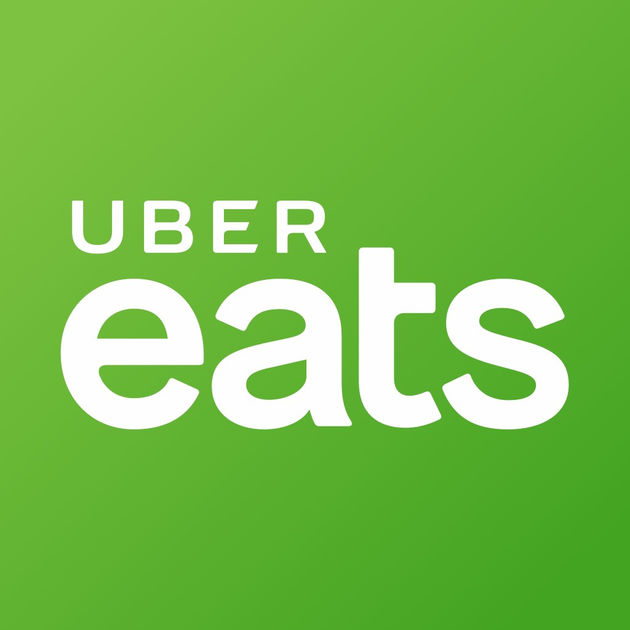
UberEats
- They do individualized taste preferences, customized restaurants and dishes based on users past orders.
- They have customized drop-off locations such as hospitals, parks, office buildings, which is their differentiating factor.
- They have filtering for speed, price and dietary constraints and their real-time tracking via map, 30-minute delivery and popular options close by are most liked features.
- They have a broad cuisine selection and the brand recognition. However, there is a perception as them being environmentally unfriendly and they are known to be expensive.
Key Takeaways
Users wanted an easy way to re-order an existing order via order history. They preffered to pay by credit card, but they wanted to pay tip by cash upon delivery or pickup.
They wanted to search and view caterers both in map and list view with following filtering options:
- Ability to filter caterers by minimum amount required, caterers by ratings, dietary constraints.
- Ability to place event based pre-orders by providing delivery date/time.
- Ability to enter event delivery and order instructions.
User Stories and User Flows
Based on the key takeaways I documented the user stories and prioritized them as High, Medium and Low. The High and Medium priority stories defined MVP (Minimum Viable Product) for Event Bites.
Below you can see High and Medium priority user stories.
As a User I want to
- Create an account with my email address OR with Facebook.
- Sign in to my account with my email address OR with Facebook.
- Reset my password.
- View and update my profile.
- Sign out.
- Provide my event delivery address and event delivery date/time.
- Add one or more credit cards.
- Update or remove my credit cards.
- Target my current location and view nearby caterers.
- Search by zip code, caterer name or address.
- Browse for caterers.
- Filter caterers by cuisines, event specials, minumum amount, ratings, dietary constrains.
- View caterer details (menu and reviews).
- View menus and select items to add to my bag.
- Specify quantatity for items before adding them to my bag.
- View and update items in my bag.
As a User I want to
- Order for delivery or pickup ASAP.
- Place an order and pay for it with my credit card.
- Select an option to pick up my order.
- Enter event order delivery instructions.
- Include tip while placing my order.
- Select the option to pay tip by cash upon delivery or pickup.
- Receive a confirmation email with a copy of my order receipt.
- Receive status update and delivery notifications.
- Rate caterers and provide feedback about my experience.
- View other customers ratings.
- View my order history.
- Re-order an existing order by accessing my order history.
- Cancel/update my order until the day of delivery by accesing my order history.
- Favorite caterers.
- View and remove favorites from my list.
- Turn on/off push notifications and confirmation emails.
Creating the sitemap and drawing the user flow diagrams allowed me to create the first version of the low fidelity wireframes. I updated the
initial user flows and the site map after the usability testing. Below you can see Create Account, Sign In and Update Account Settings user flows.
See sitemap
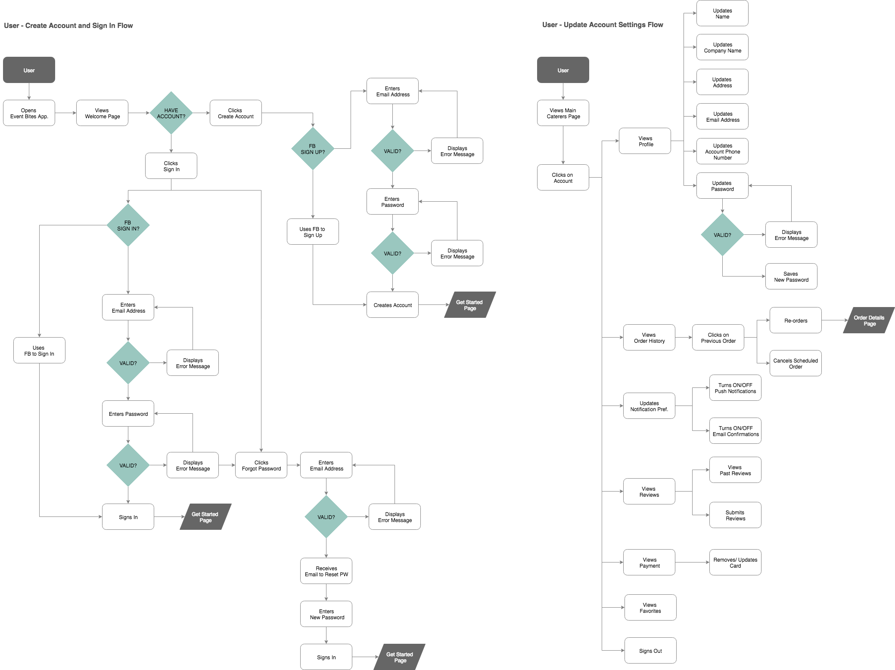
See other user flows
Low Fidelity Wireframes
I sketched some of the main user flows on paper and then created a low fidelity wireframe in Sketch to visualize them. As a result of the feedback that I received I made revisions and created a second version of the low fidelity wireframes
in Adobe XD. The changes I made during first iteration are listed below.
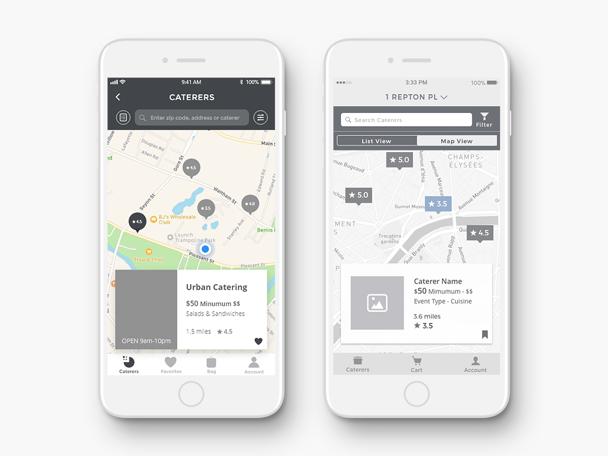
- Users were confused about the drop down located at top navigation, which was designed to update delivery location and event details.
I redesigned the caterer page to revise this concept and reduced the number of options provided to users at top navigation.
- In Reviews page, I decided to use cards for users to submit a new review or to view one of their past reviews
in order to carry a consistent design throughout the app.
- In tab bar, in addition to bag and account options I added favorites option to allow users to navigate to their
list of favorite caterers easily.
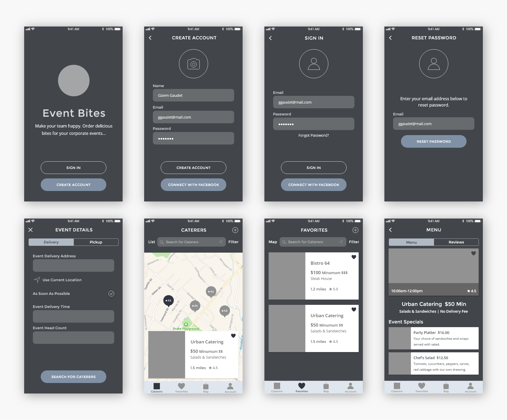
Usability Test Results
I conducted usability tests with 5 power users with the first version of the prototype. I asked them to perform the following tasks.
- TASK 1: Create an account and enter event details for a delivery order that you need to coordinate for an upcoming team lunch.
- TASK 2: Search for Caterers and explore different ways that are available to view and filter them. Do you see what you expect to see as necessary information for each caterer?
- TASK 3: Select Urban Catering to order. Was it easy to make a selection? View menu for Urban Catering and place a delivery order for Chef’s salad and pay with your credit card. What did you think about your order details and check out experience?
- TASK 4: Re-visit Caterers page and add a new event details to change delivery time and search for caterers that meet your criteria. Was it easy to enter the new event details?
- TASK 5: Visit your Account to upload a profile photo and update your profile information.
- TASK 6: Visit Payment page to update your existing card, remove it and then add a new one.
- TASK 7: Visit Order History to view your previous orders and re-order Chef’s salad from Urban Catering.
- TASK 8: Visit Reviews to view the list of caterers that are ready for review and view one of your past reviews. Edit a review that you’ve submitted in the past and then remove it.
- TASK 9: What, if anything, do you like or dislike? Since this isn’t a finished design, what would you like to see in the final version?
See usability test results
Key Takeaways
Based on the feedback that I gathered during the usability tests I made the following changes in my design.
Event Details
- Users indicated that they might not know the details of the event at the begining of the process, but they might want to search for caterers
to be able to make a decision.
Decisions: Users will not be asked to enter Event Details right after signing in or creating their account.
They will be asked to enter an address or a zip code or use their current location to navigate to Caterer Search Page immediately after signing in or creating their account.
Caterers (Map/List View)
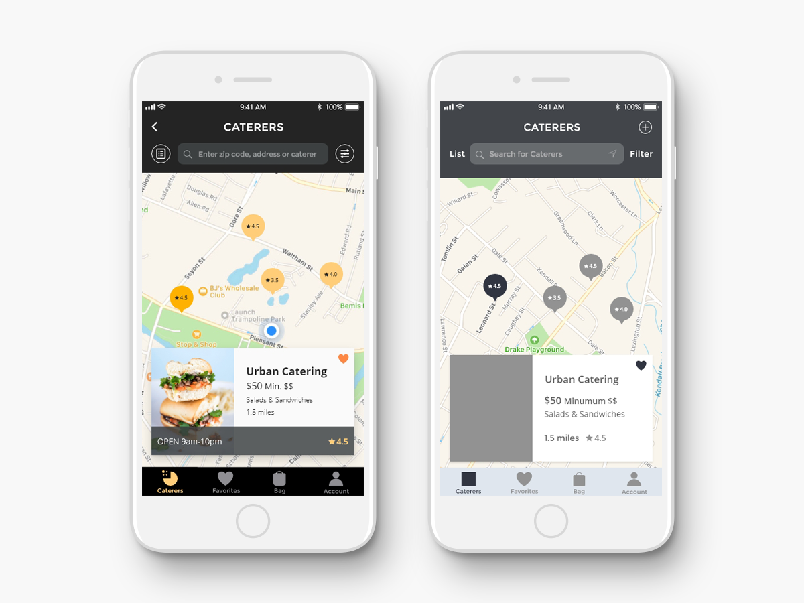
- Users were unclear about the functionality of the + icon. It was intended for updating and adding event details.
- Users mentioned about the importance of indicating what they could search via search field.
- Users wanted to know the open hours for caterers before making a selection.
Decisions: The + icon and its functionality will be removed. Event Details will only be asked during the checkout process.
The search field will clearly state “enter zip code, address or caterer". Open hours will display on cards.
Filters
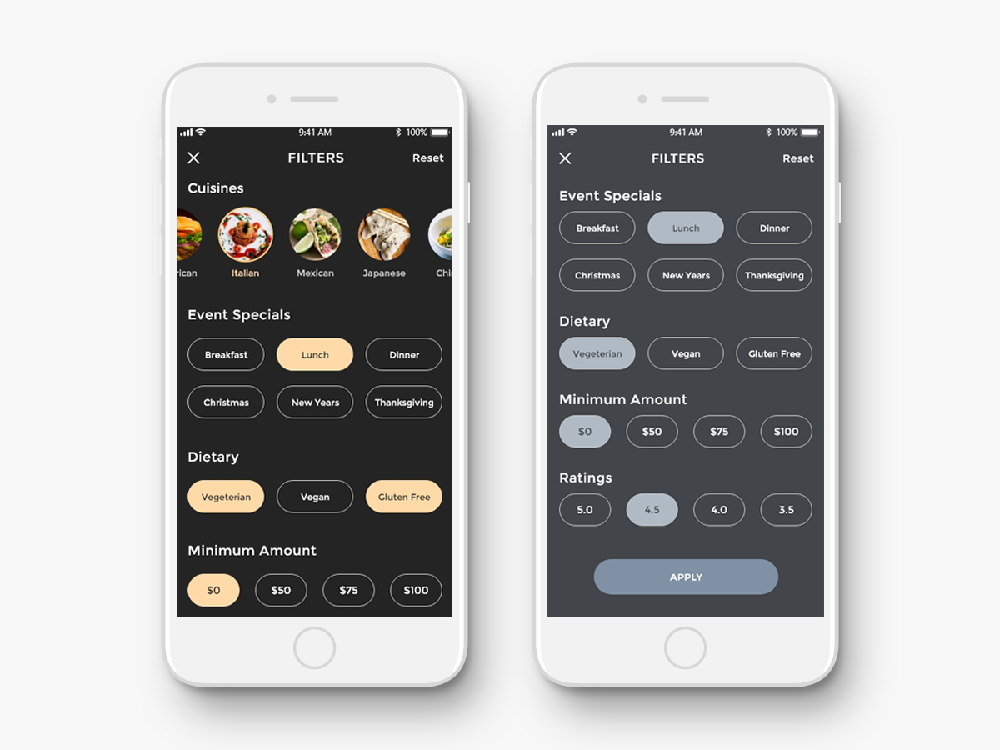
- It was challenging to include all the cuisine options without making the filter page very long.
Decisions: Since it was our users request to include more
cuisine options I decided to display them in a slider format at top along with an ability to select multiple options to
select more than one option for each criteria.
Checkout and Bag
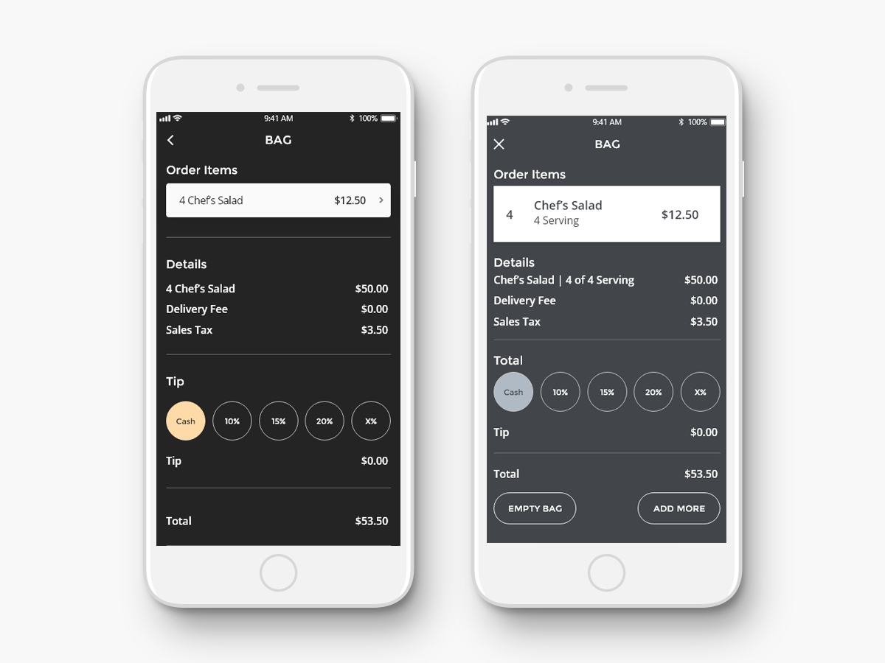
- Users thought that having the total title above the tip entry section was confusing.
- Users mentioned that they were confused about the serving vs. the quantity concept.
- They thought that it would be hard to keep pressing + to increase the quantity to order for a large group.
Decisions: Tip section will be before Total and the Total
title that displays before Tip will be removed. The search results will not be displayed based on the headcount and the
headcount field will be removed from Event Details. Users will be able to update quantity for order items by selecting
a serving amount via predefined values easily instead of adding it via + icon.
Order History
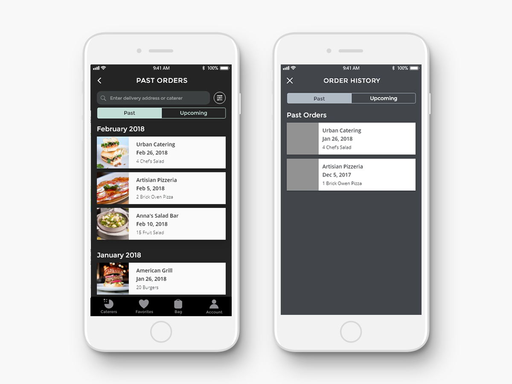
- Users wanted to be able to sort past orders to find a specific order from past to reorder.
Decisions: There will be search and sort options by date and
caterer name in the Order History page to find the order that they are looking for easily.
Caterers, Order History-Reorder, Checkout
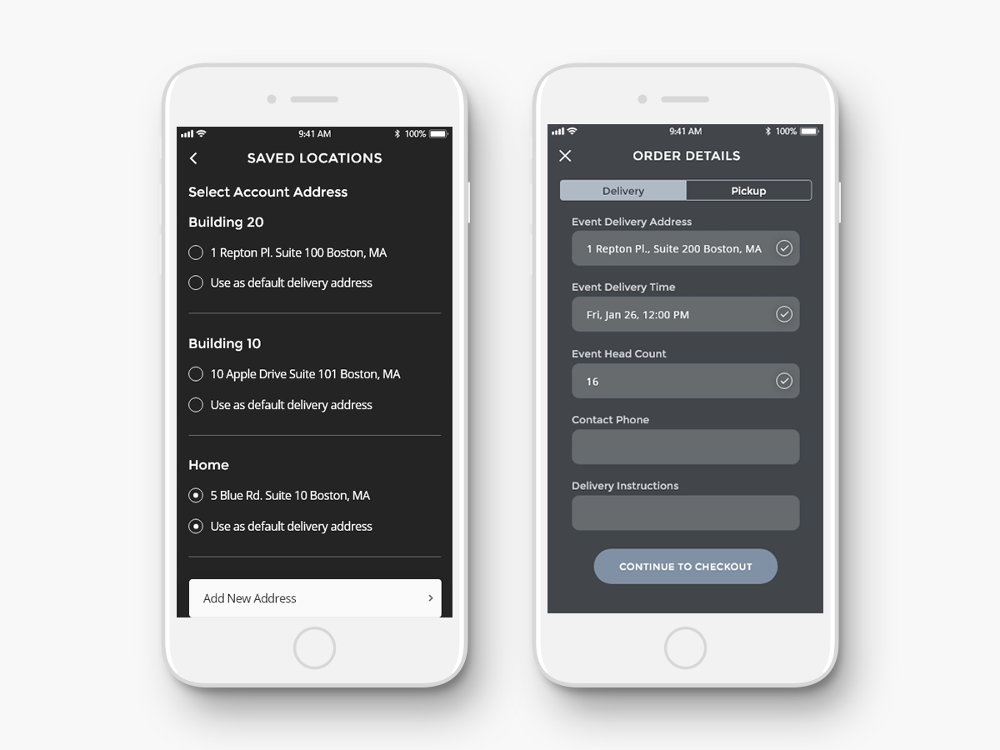
- Users mentioned about the importance of being able to access their saved locations whenever they are asked to provide location information.
Decisions: Previously entered delivery addresses will be stored and displayed
for users to choose from during search, reorder and checkout process.
Profile
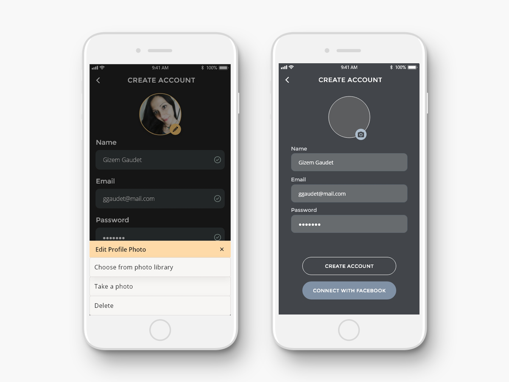
- Some users were confused about the way the upload and update profile photo worked initially.
Decisions: The profile photo upload/update design
will be improved by using an edit icon instead of camera after a photo is uploaded and users will be given the
options to choose a photo from library, take a photo and delete while updating their profile photo.
High Fidelity Wireframes
I updated the low-fidelity wireframes based on the Usability Test Results and created the
high-fidelity wireframes by incorporating the logo and the icons that I created for Event Bites brand.
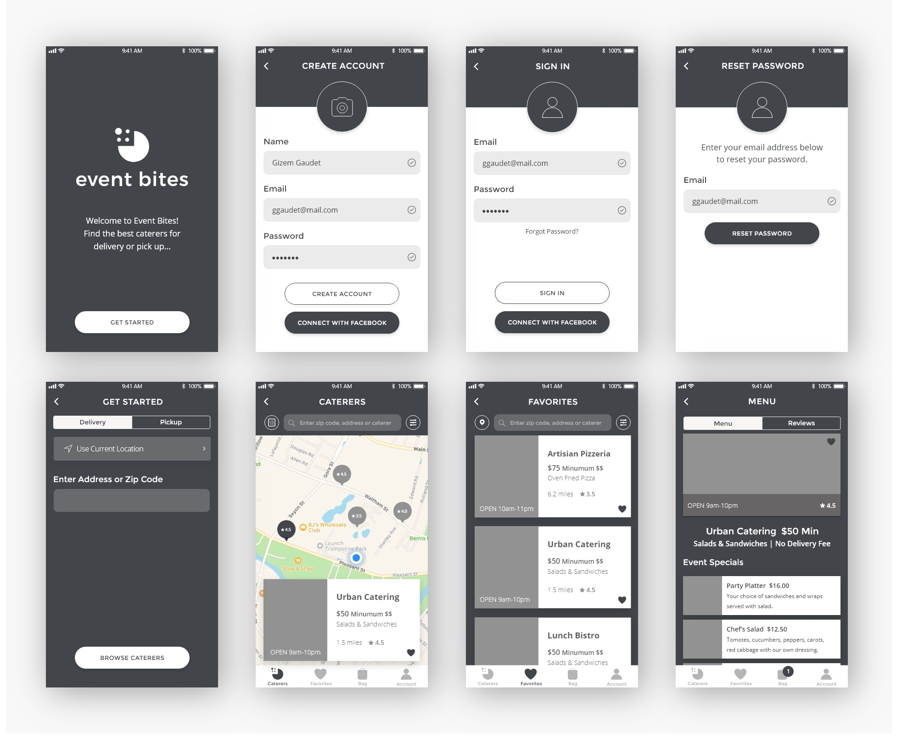
Branding and Style Guide
I explored logo ideas for Event Bites by sketching and then drawing in Illustrator. I picked 4 options that
had a better tie into the word mark Event Bites. I posted them on different channels and performed a preference
test via UsabilityHub to pick one as a final logo.
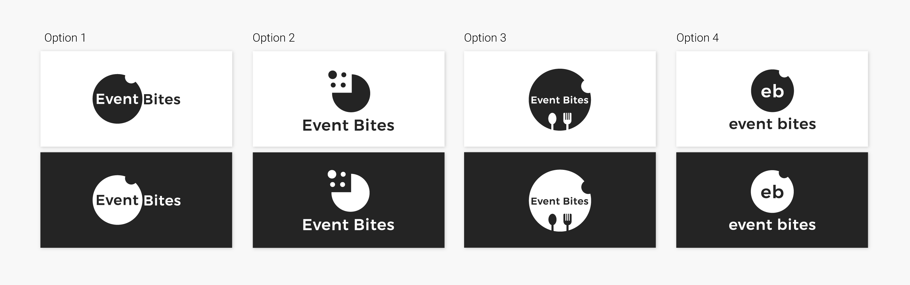
Based on the preference test results 23% picked option 1, 31% picked option 2, 15% picked option 3, 31%
picked option 4. Based on the supporting feedback Option 2 is clean and the graphic is a very clear direct tie-in to my word
mark. It is also the most recognizable when it’s small, carries fun and celebration concept. It could be used as an icon,
which I used as the caterer icon in tab bar throughout my design. In my final design, I picked Option 2 as Event Bites’ logo
by making the text bigger, using all lower-case and making the graphic smaller.
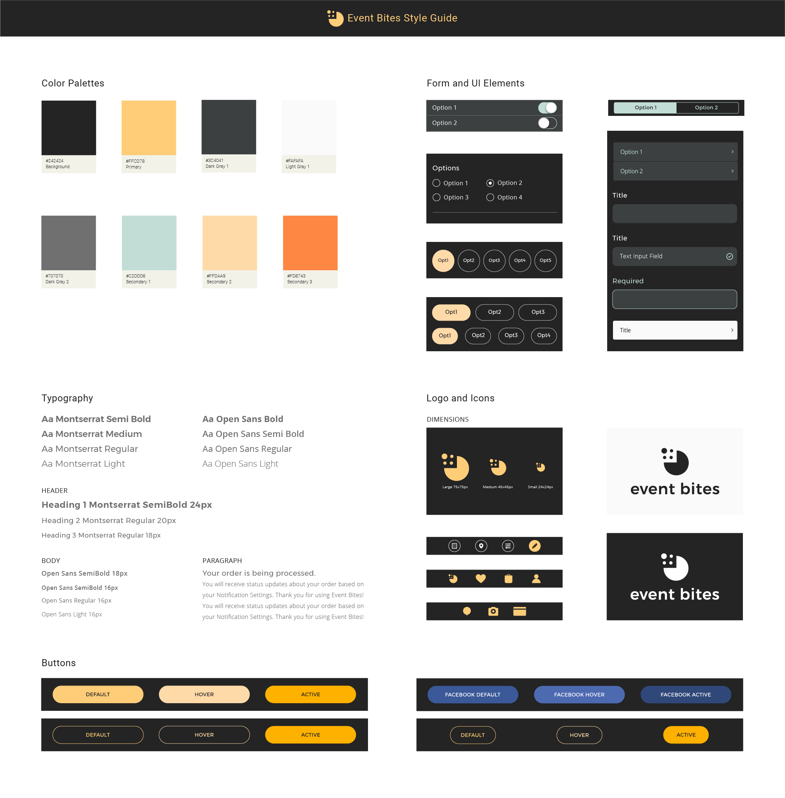
See logo preference test results
I picked a warm yellow tone as a primary color to make Event Bites inviting and also to give the necessary party,
celebration and fun feeling. I used a dark background to create a strong contrast with yellow and a tone of blue in certain
optional elements as a secondary color to balance out the warm yellow throughout my design. I updated the prototype
with selected images, logo, color, form and UI elements and created the final design mockups in Adobe XD.
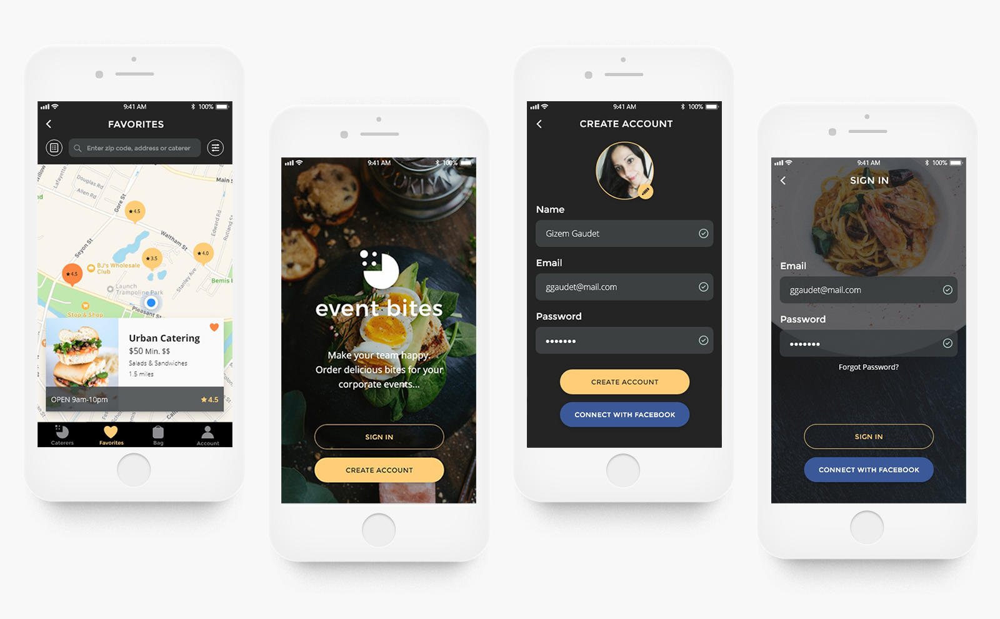
Final Thoughts
The final app design was well received and users liked seeing all the improvements based on their feedback. They loved the color palette, UI elements and the overall
feel of the design. I came out of this project with a better understanding of Apple’s iOS Human Interface Guidelines. As a result of this experience,
I also learned that the Usability Testing plays a very important role in creating an intuitive design. I would have missed some of the important details
in user flows without having our users critique. Majority of the changes I made between my first low fidelity prototype and my high-fidelity prototype
were pretty drastic. Our users pain points surfaced during interviews and usability tests and allowed me to improve my design.